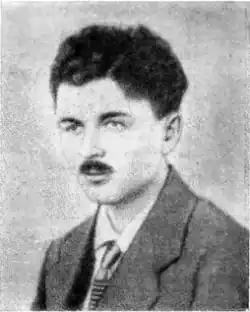

Народився 30.09.1899 р. в с. Проруб на Сумщині в родині волосного писаря. Вчився у земських школах. У 1915–1918 рр. навчався у Курській учительській семінарії, вчителював на селі та в залізничних школах.
У 1921 р. А. Панів вступає на факультет соціального виховання Харківського ІНО і закінчує його у 1925 р. Опісля працював у редакціях газети "Селянська правда", журналів "Сільськогосподарський Пролетар", "Плуг", "Трактор", у видавництві "Плужанин", викладачем ІНО, науковим співробітником Інституту літератури ім. Т. Г. Шевченка. Був секретарем "Плуга".
А. Панів почав друкувати вірші з 1921 р. в журналах "Шляхи мистецтва" "Сільськогосподарський пролетар", "Червоний Шлях", "Плужанин". Видав збірки поезій "Вечірні тіні" (1927), "Без межі" (1933), збірки новел "Село" (1925), "Христя" (1928) та казку "Як звірі хату будували". Панів був також автором кількох шкільних підручників з української мови та літератури, популярних посібників для бібліотечки учня. Арештували його 6.12.1934 р. За кілька днів А. Панів визнав свою приналежність до контрреволюційної організації, проте заперечував участь у підготовці терактів. Але врешті признався, що "носив камінь за пазухою проти вождів партії". 28.03.1935 р. поета засудили на 10 років. Понад два роки він провів у північних таборах. А 9.10.1937 р. його засудили до розстрілу. Вирок виконали 3.11.1937 р. в урочищі Сандармох.